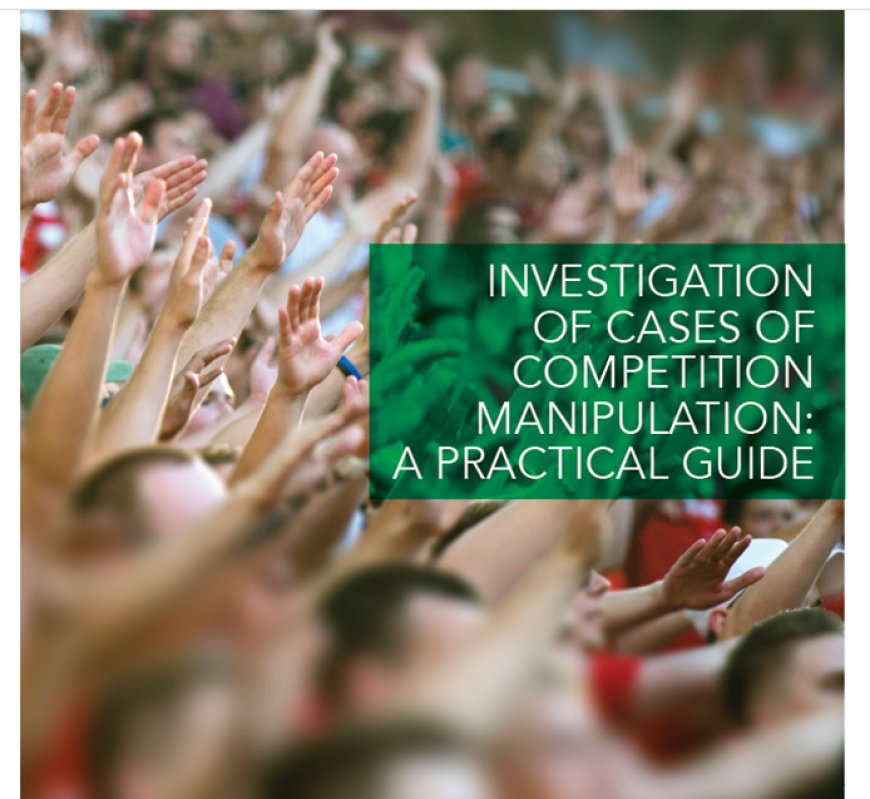

A policy-focused analysis of corruption risks and governance strategies for two of the world's biggest upcoming sporting events.

Imagine you're a young athlete at the Olympics. You've just left the rink or pool or pitch. Your chest is heaving, your uniform is drenched with sweat, and disappointment is coursing through all of your aching muscles. Despite the hours of training, despite the many sacrifices you and your family have made, you have come in fourth place. No medal for you.
Now imagine that it is weeks, months or even years later, and you find out a judge was bribed to give a higher score to the athlete who won bronze, knocking you off the podium and changing the entire trajectory of your career.
Though this example is fictional, in the past victory has indeed been bought, matches have been rigged, and the spirit of fair play has been overshadowed by greed and deceit – including at major events.
Corruption poses a significant threat to sport, costing the trust of fans and undermining the fundamental values of integrity and fairness. Corruption, with its many tentacles, infiltrates bidding processes, player transfers, the awarding of contracts and even the outcomes of games, casting a dark cloud over the brilliance of athletic achievement.
The weak or complex governance structures of some sport organizations and the economic appeal have made them prime targets for criminals, including organized criminal groups.
These groups make use of networks and mechanisms across different jurisdictions, often intermingling illicit funds with legal economic activities.
It is clear – major sports events remain vulnerable to corruption risks. Safeguarding them from corruption is key to ensuring their positive legacy. The organization of a major event can become a laboratory to develop, experiment with and perfect new anti-corruption and risk mitigation strategies and to demonstrate their effectiveness and social benefits beyond sport.
With two major sports events on the global calendar coming up – the FIFA World Cup 2026 and the 2028 Summer Olympics in Los Angeles – the United Nations Office on Drugs and Crime (UNODC) has launched a report aimed at supporting Canada, Mexico, the United States of America as well as the International Olympic Committee (IOC) and the Fédération Internationale de Football Association (FIFA) in ensuring that the FIFA World Cup 2026 and the 2028 Summer Olympics in Los Angeles are protected from corruption.
Officials involved in safeguarding these events from corruption are meeting to plan how to address the recommendations outlined in the report.
Major events significantly boost the host nation's economy – through increased tourism, merchandise sales, new infrastructure, and other channels – but they also bring serious corruption risks.
A legal gap analysis and a comprehensive risk assessment report for each host country will help to ensure that no loopholes are exploited by those seeking to engage in corrupt practices, thereby safeguarding the integrity of the events, their economic benefits, and public and private investments.
It takes a collective effort of a multitude of stakeholders to ensure that the integrity of major events is upheld – from criminal justice authorities and anti-corruption bodies to local authorities, security services, private sector representatives, and sports organizations.
The establishment of inter-agency specialized task forces, integrity units and working groups is not only the latest trend, but also a practical way to ensure that integrity solutions bring all relevant actors to the table and respond to the needs of the countries involved.
There is no "one-size-fits-all" solution for the development of anti-corruption strategies and policies; they need to be event-specific. This is especially true given the unique nature of both the FIFA 2026 World Cup and the 2028 Summer Olympics.
Effective detection and reporting mechanisms can strengthen intelligence-led investigation processes and increase the likelihood of securing successful criminal prosecutions or sport-led disciplinary sanctions.
According to the report, the first step is to conduct a comprehensive mapping exercise of reporting mechanisms in countries and of those managed by sports governing bodies involved in the organization of the FIFA World Cup 2026 and the 2028 Summer Olympics. This helps develop an overview of their characteristics, target audiences, coverage areas, and accessibility.
If gaps exist, ad hoc reporting tools and channels could be developed specifically for these major events.
Given the vast amounts of funds invested in sports, such offences as competition manipulation and illegal betting often have transnational characteristics that make investigation and prosecution challenging across jurisdictions.
Those tasked with carrying out these investigations need specialized training to handle complex cases and navigate international legal frameworks effectively.
Major sports events, as products of multi-agency, public-private and cross-jurisdictional cooperation, offer an important opportunity for building a strong anti-corruption legacy, especially when events are hosted by multiple countries.
By fostering transparency, enhancing reporting mechanisms and promoting public-private cooperation, stakeholders can protect the legacy of these events and ensure that future generations of athletes and fans can continue to draw inspiration from these competitions.
UNODC's report provides a deeper look into the risks facing the FIFA World Cup 2026 and the 2028 Summer Olympics in Los Angeles, as well as the strategies available to mitigate them.
This report builds on discussions held on the margins of the tenth session of the Conference of the States Parties to the United Nations Convention against Corruption. Its findings were set to be further discussed with representatives of criminal justice authorities and national football associations from Mexico, the United States of America and Canada, alongside international organizations and private sector entities in Miami in June 2024.
These stakeholders are expected to identify and plan actions to implement the report's recommendations.
Protecting major sporting events from corruption is not only a governance challenge but also a moral imperative. The FIFA World Cup 2026 and the 2028 Summer Olympics will be watched by billions, and their integrity will shape public trust in global sport.
Through stronger legal frameworks, coordinated institutions, improved reporting systems, trained investigators, and meaningful public-private cooperation, sport can better defend itself against corruption and preserve the principles of fairness, transparency, and justice.